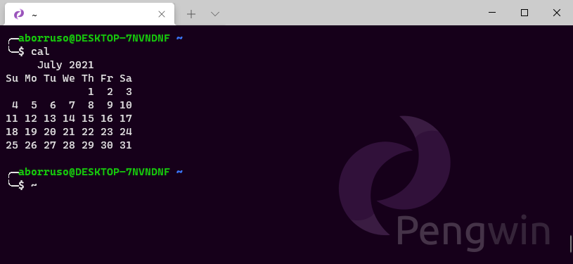

La CLI¶
La riga di comando - in inglese CLI, la Command Line Intereface - è un'interfaccia di dialogo testuale tra utente e computer, che interpreta i comandi inseriti da tastiera e li esegue. È utilizzabile anche tramite script.

Esistono decine di interfacce a riga di comando, per tutti i sistemi operativi. Qui si farà riferimento a una generica CLI, in un sistema operativo Linux.
È possibile attivarla in tutti i sistemi operativi: Linux (ovviamente), Mac OS (che è basato su un sistema operativo Unix), Windows (il modo consigliato per Win è Windows Subsystem for Linux), ChromeOS, ecc..
La CLI (chiamata anche shell) inizialmente può intimorire un po', ma può essere un'ancora di salvezza per tantissime operazioni/elaborazioni.
Esistono diversi sistemi di shell (distinti, ma ampiamente compatibili tra loro), tra i quali il più popolare è Bash, acronimo di "Bourne again shell".
Bash è sia una raccolta di utility (come grep, un potente strumento per fare ricerche di testo), che un linguaggio di programmazione, con i suoi for loop per ripetere operazioni su più file.
Molte discipline computazionali, come la bioinformatica, fanno affidamento sulla riga di comando. Ma tutte le persone che utilizzano un personal computer possono trarne vantaggio, perché il mouse non è scalabile, mentre con la tastiera si può sollevare il mondo 🙃.
Alcuni esempi.
Operazioni su più file in blocco¶
Forse la caratteristica più potente della shell è la capacità di ripetere semplici processi su più file. Una persona potrebbe, ad esempio, rinominare sistematicamente i propri file ed aggiungere al loro nome la data, o convertirli da un formato all'altro.
Elvira Almiraghi, per i suoi studi di post-dottorato, aveva la necessità di aprire centinaia di immagini presenti in una cartella, invertirne i colori e modificarne anche luminosità, saturazione e tonalità.
Operazioni di questo tipo, con un mouse, possono durare ore. Elvira, con la riga di comando e sfruttando ImageMagick - una utility dedicata alle immagini - ha semplificato tutto in queste righe:
for file in *.png; do
convert $file -channel RGB -negate -modulate 100,100,200 out_$file
done
Gestire file di grandi dimensioni¶
Alcuni file di testo strutturato hanno dimensioni che li rendono inutilizzabili con la gran parte del software.
Pasubio Giovinezza, un esperto di DNA, si trova giornalmente ad esempio a gestire file con milioni di varianti genetiche, che non si possono aprire con un foglio elettronico, perché in questo tipo di applicazioni le dimensioni di un foglio sono limitate a circa 1 milione di righe.
Con la riga di comando e con le sue utility (come awk e cut), Pasubio può filtrare dai suoi file "grandi" solo le righe che superano una certa soglia di qualità, estrarne soltanto alcune colonne e salvare tutto in un nuovo file. Aassumendo che il punteggio di qualità sia nella colonna 4, che la soglia sia a 50 e le colonne desiderate sono 1–4:
awk -F, '{ if ($4 > 50) print $0 }' datafile.csv | cut -d, -f1-4 > newdatafile.csv
Mettere in fila più operazioni: la magia del "pipe"¶
I comandi della shell nascono per fare una sola cosa e bene. Ad esempio cut estrae una o più colonne da una tabella, wc conta le parole, le righe o i caratteri di un file, awk applica dei filtri alle righe basati su una o più condizioni, e sed modifica flussi di stringhe di testo.
Questi comandi possono essere messi tutti insieme, utilizzando il | (il "pipe", il tubo), una funzionalità della shell che incanala l'output di un comando verso un altro.
Giorgio Perozzi, un amministratore di sistema, dice che "il | dà la possibilità di trovare rapidamente soluzioni a problemi quotidiani e prototiparne rapidamente tante".
Il comando di sotto, per contare i nomi univoci di geni da una sequenza, avrebbe fatto comodo a Pasubio:
cut -f1 GEOdataset.csv | sed -E 's/^>//' | sort | uniq | wc -l
Questo è quello che fa il comando soprastante: estrae la prima prima colonna (cut), rimuove il carattere > eventualmente presente a inizio riga (sed), ordina il tutto alfabeticamente (sort), estrae i valori univoci (uniq) e stampa il numero di righe di output (wc).
Eseguire processi in parallelo¶
Valentina Gherardini, lavora in un centro di calcolo che fornisce accesso remoto a circa 14.000 nodi, verso terabyte di dati. Supponiamo, dice la Gherardini, che un geofisico debba svolgere un flusso di lavoro computazionale per analizzare set di dati sismici, che ogni set richieda un giorno per essere elaborato sul proprio computer e che il ricercatore abbia 60 di questi set di dati. "Sono due mesi ininterrotti di elaborazione", dice.
Ma, inviando il lavoro a un cluster di computer, in connessione sicura con ssh, aprendo un portale crittografato da remoto, il ricercatore può parallelizzare i suoi calcoli su 60 computer. "Invece di due mesi, ci vuole un giorno."
La parallelizzazione dei processi, si realizza in modo ricco ed efficiente nella shell. Una utility dedicata è parallel.
Automatizzare i processi¶
I comandi della shell possono essere archiviati in file di testo chiamati script, che possono essere salvati, condivisi e sottoposti a versioning, migliorandone la riproducibilità.
Possono anche essere automatizzati. Utilizzando il comando cron, gli utenti possono pianificare l'esecuzione degli script.
Ad esempio, afferma Perozzi, alcuni siti Web suggeriscono agli utenti che intendono fare scraping/download dei loro contenuti, di farlo in orari "notturni" - ad esempio tra le 21:00 e le 5:00. "Puoi far eseguire [lo script] solo negli orari suggeriti". Un esempio è quello del "NCBI National Center for Biotechnology Information", in cui nelle linee guida si legge "Run retrieval scripts on weekends or between 9 pm and 5 am Eastern Time weekdays for any series of more than 100 requests."